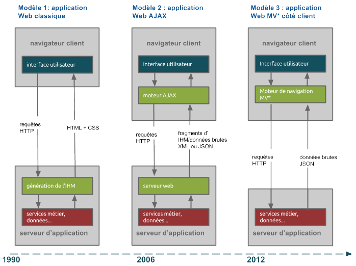

Présentation AngularJS
Jean Detoeuf
Sommaire
Introduction et besoin
Utilisation basique d'AngularJS
Tests unitaires
Composants d'AngularJS
Création de composants
Jean Detoeuf
Ingénieur concepteur/développeur
Passionné de Java, Spring, Web, Javascript
Plein de choses hype comme le growth hacking, nodeJS, la programmation reactive, fonctionnelle, le continuous delivery, sauter dans le vide et les choses qui vont vite
La bière, le voyages, le roller, courir
Et les nouvelles technos en général
Sondage
A déjà utilisé un framework JavaScript ?
Déjà entendu parler d'AngularJS ?
A déjà utilisé AngularJS ?
Est à l'aise avec AngularJS ?
Demander de lever la main. Si oui à la dernière, demander à partir !
Besoin
Fonctionnement standard client/serveur avant 2005 : serveur produit une page, le client en fait le rendu
2005 : Arrivée d'AJAX
Des "bouts" de page peuvent être affichés à la demande : il n'est pas nécessaire de recharger une page à chaque action
Aucune intelligence réelle côté client
Evolution des interfaces web

Pourquoi on n'avait pas fait comme ça avant ?
JavaScript existe depuis longtemps
L'évolution de la puissance des terminaux (PC, mobile) permet d'effectuer de placer de l'intelligence côté client.
Les moteurs JavaScript se sont améliorés à partir de 2008 (merci AJAX).
Même les mobiles peuvent tirer parti de cette amélioration
Framework JS développé par Google
Première version 2009
Fondé sur la programmation déclarative
Architecture MVC ou plutôt MVVM
Injection de dépendance
Points forts
Open Source
Maintenu par Google
Injection de dépendance (Je vais être très lourd sur ce point)
Couplage faible entre présentation, données, composants métier
Tests unitaires et bout en bout
Compatible REST
Compatible WebSockets
Points faibles
Encore en évolution
Ne fonctionne pas sur IE6, et adaptations à faire pour IE7 et IE8
La gestion des fichiers peut vite devenir cahotique si on ne la maitrise pas.
Validation à implémenter côté client
Possibilité d'être remplacé un jour par DartJS
Concurrents
Backbone.js Ember.js Knockout.js Plusieurs frameworks qui gèrent le rendu HTML, les feuilles de style, voir même le Back Office
JQuery n'est pas un concurrent, il est complémentaire
La force d'AngularJS est de ne pas tout faire, de se concentrer sur le MVVM
Pourquoi AngularJS plutôt qu'un autre framework JavaScript ?
(Moi j'adore le jQuery, ça marche très bien...)
Utilisation d'AngularJS
Bases
Installation
Aller sur angularjs.org
Télécharger la dernière version et l'inclure dans sa page web
Ou tiliser le CDN Google pour l'inclure dans sa page web
<html ng-app="myApp">
<head>
<script src="https://ajax.googleapis.com/ajax/libs/angularjs/1.2.12/angular.min.js"></script>
</head>
<body>
</body>
</html>
Evaluations
Une évaluation permet d'afficher une valeur
Exemple : {{1+1}} affiche 2
<html ng-app="myApp">
<head>
<script src="https://ajax.googleapis.com/ajax/libs/angularjs/1.2.12/angular.min.js"></script>
<script type="text/javascript">
var myApp = angular.module('myApp', []);
myApp.controller('MyCtrl', function MyCtrl($scope) {});
</script>
</head>
<body ng-controller="MyCtrl">
Réponse : {{ 7 * 6 }}
</body>
</html>Démonstration
Controlleur
Conteneur permettant de gérer des variables
En JavaScript, des variables peuvent être des fonctions
Les variables d'un controlleur sont contenue dans son $scope
Le $scope permet l'étanchéité des variables au sein du controlleur
<html ng-app="myDemo2">
<head>
<script src="https://ajax.googleapis.com/ajax/libs/angularjs/1.2.12/angular.min.js"></script>
<script type="text/javascript">
var myApp = angular.module('myDemo2', []);
myApp.controller('MyCtrl', function MyCtrl($scope) {
$scope.reponse = 42;
});
</script>
</head>
<body ng-controller="MyCtrl">
Réponse : {{ reponse }}
</body>
</html>Démonstration
Répéteur
ng-repeat permet d'itérer sur une liste (ie. foreach)
<html ng-app="myApp">
<head>
<script src="https://ajax.googleapis.com/ajax/libs/angularjs/1.2.12/angular.min.js"></script>
<script type="text/javascript">
var myApp = angular.module('myApp', []);
myApp.controller('MyCtrl', function MyCtrl($scope) {
$scope.elems = [0,1,1,2,3,5,8,13];
});
</script>
</head>
<body ng-controller="MyCtrl">
{{elems.length}} premiers éléments de la suite de Fibonacci :
<ul><li ng-repeat="elem in elems track by $index">{{elem}}</li></ul>
</body>
</html>Démonstration
Filtres 1/3
Permet de modifier le rendu d'une valeur
Peut s'appliquer sur des listes
Exemple de filtres :
filter
orderBy
limitTo
date
currency
json
lowercase
uppercase
number
Filtres 2/3
<html ng-app="myApp">
<head>
<script src="https://ajax.googleapis.com/ajax/libs/angularjs/1.2.12/angular.min.js"></script>
<script type="text/javascript">
var myApp = angular.module('myApp', []);
myApp.controller('MyCtrl', function MyCtrl($scope) {
$scope.technos = ['JavaScript', 'HTML', 'CSS', 'Java'];
});
</script>
</head>
<body ng-controller="MyCtrl">
Technologies :
<ul><li ng-repeat="techno in technos">{{techno}}</li></ul>
Technologies Java* :
<ul><li ng-repeat="techno in technos | filter:'Java'">{{techno}}</li></ul>
</body>
</html>Démonstration
Filtres 3/3
Possibilité de créer ses propres filtres
Permet de factoriser un comportement
<html ng-app="myApp">
<head>
<script src="https://ajax.googleapis.com/ajax/libs/angularjs/1.2.12/angular.min.js"></script>
<script type="text/javascript">
angular.module('filters', []).filter('truncate', function () {
return function (text,length) {
return (text.length<=length)?text:(String(text).substring(0,length)+'...');
};
});
var myApp = angular.module('myApp', ['filters']);
myApp.controller('MyCtrl', function MyCtrl($scope) {
$scope.blah = 'blah blah blah blah blah blah blah blah blah';
});
</script>
</head>
<body ng-controller="MyCtrl">
<table>
<tr><td>Avant filtre</td><td>{{blah}}<td/></tr>
<tr><td>Après filtre de taille 18</td><td>{{blah|truncate:18}}<td/></tr>
</table>
</body>
</html>Démonstration
Binding bidirectionnel 1/3
Vue vers Modèle : Certains composants permettent de modifier le modèle à partir de la vue
Modèle vers Vue : Toute modification du modèle entraine la modification de la vue associée
AngularJS est assez intelligent pour savoir quels composants de la sont affectés par la modification d'un modèle donné
Chaque mise à jour de la vue à partir du modèle s'appelle un digest
AngularJS optimise le digest pour le rendre très perfomant, voir instantané
Binding bidirectionnel 2/3
Binding bidirectionnel 3/3
<html ng-app="myApp">
<head>
<script src="https://ajax.googleapis.com/ajax/libs/angularjs/1.2.12/angular.min.js"></script>
<script type="text/javascript">
var myApp = angular.module('myApp', []);
myApp.controller('MyCtrl', function MyCtrl($scope) {
$scope.nom = 'le monde';
});
</script>
</head>
<body ng-controller="MyCtrl">
Bonjour <input ng-model="nom"/><br/>
Comment ça va, {{nom}} ?
</body>
</html>Démonstration
Resources
Angular gère nativement le REST
Il est possible d'effectuer n'importe quelle requête HTTP
Définir une vraie resource HTTP avec paramétrage de l'URI (ie. /user/:id ou /post/:name )
<html ng-app="myDemo7">
<head>
<script src="https://ajax.googleapis.com/ajax/libs/angularjs/1.2.12/angular.min.js"></script>
<script type="text/javascript">
var myApp = angular.module('myDemo7', ['ngResource']);
myApp.factory('AngularJsIssues', function($resource){
return $resource('https://api.github.com/repos/angular/angular.js/issues');
});
myApp.controller('MyCtrl', function MyCtrl($scope,AngularJsIssues) {
$scope.issues = AngularJsIssues.query();
});
</script>
</head>
<body ng-controller="MyCtrl">
<table>
<tr>
<th>Id</th>
<th>State</th>
<th>Title</th>
</tr>
<tr ng-repeat="issue in issues">
<td ng-bind="issue.id"></td>
<td ng-bind="issue.state"></td>
<td ng-bind="issue.title"></td>
</tr>
</table>
</body>
</html>
Démonstration
Utilisation d'AngularJS
Tests
Introduction
Quoi ? des tests automatisés en JavaScript ??
Tests unitaires et tests bout en bout (E2E)
Lancement des tests avec
Les tests peuvent être lancés sur plusieurs navigateurs
Karma peut aussi faire les tests sur un port (ie. mobile ouvert sur un port d'écoute)
Exemple
Unit tests : Test d'un module
End-to-end tests : Test de plusieurs modules
Les interfaces peuvent être bouchonnées (voir angular.mock.inject)
Tous les examples de cette présentation ont leur test
'use strict';
describe('myDemo1', function(){
var curModule;
beforeEach(curModule = module('myDemo1'));
describe('myDemo1 module', function(){
it('should have a module', function() {
expect(curModule).not.toBeNull();
});
});
describe('Controller', function(){
var scope, ctrl;
beforeEach(inject(function($rootScope, $controller) {
scope = $rootScope.$new();
ctrl = $controller('MyCtrl', {$scope: scope});
}));
it('should have a controller', function() {
expect(ctrl).not.toBeNull();
});
});
});
Utilisation d'AngularJS
Fonctions avancées
Injection de dépendances
Permet l'inversion de contrôle
Fonctionne par module
Un module peut dépendre d'autres modules
Il est alors possible de faire appel aux méthodes de ces modules
Permet la séparation de considérations
Code testable unitairement (un module représente une fonctionnalité et les autres modules peuvent être mockés)
Directives 1/2
Utiliser des nouveaux tags
Utiliser des nouveaux attributs
<alert>Alerte !</alert>
<datepicker min="minDate" show-weeks="showWeeks"/>
Directives 2/2
Possibilité de créer ses directives
Comme si on réécrivait du HTML
Peut être "compilé"
<twitter-tweet-page/>
<google-plus-page/>
<facebook-like-page/>
<twitter-direct-message user="@thebignet"/>
<twitter-followers user="@thebignet"/>
<github-last-commit user="thebignet" project="pres-angularjs"/>
router
Permet de lier à une URI une vue et un controlleur
/users affiche la vue imbriquée users.html avec le controlleur UserCtrl
ui-router
Meilleur que le routeur intégré à AngularJS
Permet de gérer des états plutôt que des URI
Plusieurs vues/controlleurs pour un URI
Vues imbriquées
Directive pour une navigation plus simple
Vues
Avec le routeur intégré à AngularJS
myApp.config(['$routeProvider',
function($routeProvider) {
$routeProvider
.when('/users', { templateUrl: 'users.html', controller: 'UserCtrl' })
.otherwise({ redirectTo: '/' });
}]);<div ng-view></div>
Vues
myApp.config(function($stateProvider, $urlRouterProvider) {
$urlRouterProvider.otherwise("/");
$stateProvider.state('users', { url: "/users", templateUrl: "users.html" })
});<div ui-view></div>
Animations
Basé sur des évènements liés à des directives
Suite à l'ajout/suppression d'un élément à une liste
Suite à la modification d'une valeur
AngularJS applique des classes CSS spécifique avant et pendant l'action
Toutes les transitions CSS3 sont utilisables
jQuery
Version allégée de jQuery inclue dans AngularJS
Peut être surchargée par la version complète
La version alléegée ne contient pas les sélecteur css et c'est pour votre bien car ce n'est pas la philosophie d'AngularJS
Intégration continue
Les tests peuvent être exécutés sur plusieurs navigateurs à chaque sauvegarde en local ou à chaque commit
Karma peut être lancé par Jenkins, Sonar, ou Travis
Les rapports produits sont au format Junit
Pour monter un projet rapidement
Angular-seed
Framework CSS : Twitter Bootstrap, Foundation
Utiliser Yeoman avec generator-angular ou generator-jhipster
Hébergement
Le serveur peut héberger les resources front et fournir l'API
Possibilité d'avoir un serveur statique pour le front et une API pour le back
Plus de flexibilité quant à la charge reposant sur chacun
Les serveurs frontaux peuvent mettre les resources en cache efficacement
Les serveurs d'API peuvent être dimensionnés
Ce découpage se prête plus facilement à un cloud


 @thebignet
@thebignet thebignet
thebignet